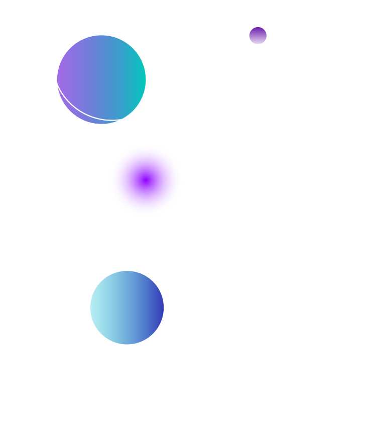

<mat-toolbar  class="header mat-elevation-z4">
  <span>
    <a>
      
    </a>
  </span>
  <span class="title-group">
    <a>
      <i class="material-icons">
        <!-- dashboard -->
        home
      </i>
      Aplicação CRUD - Angular  
    </a>
  </span>
</mat-toolbar>